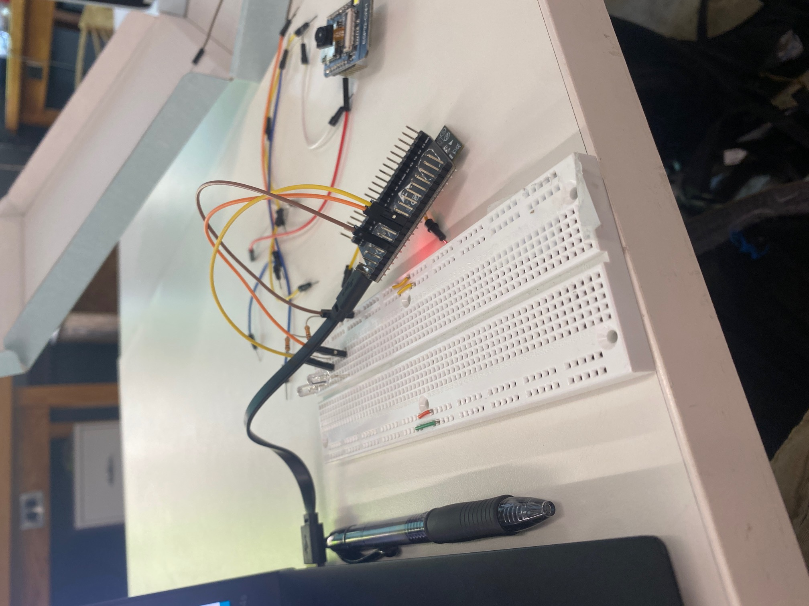
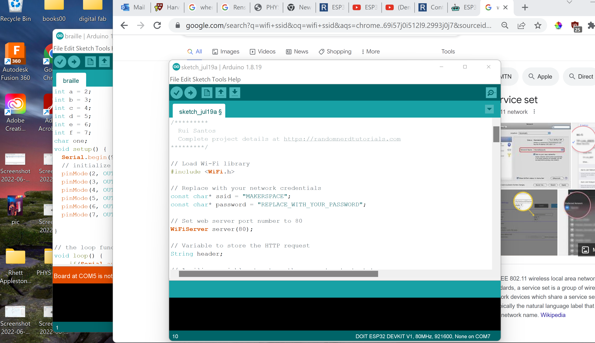
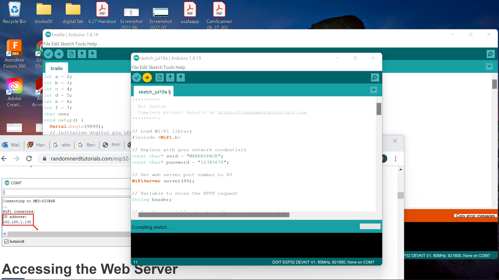
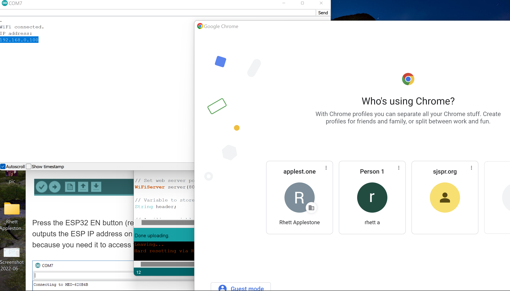
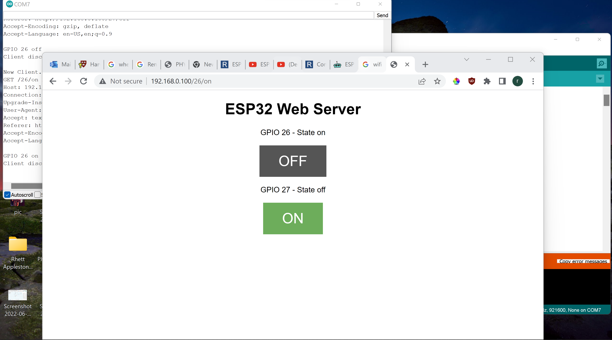
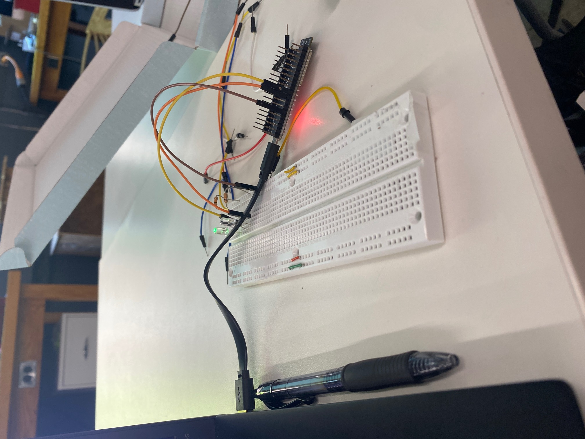

Because my final project centers around the control of a grid of leds, I decided to control a few of leds as a test run, I found this great tutorial by random nerd!
I connected the wires, leds, resistors, and ESP-32 to the breadboard and to my computer
I took the code from random nerd and put it in my arduino IDE
Then as instructed I changed the wifi to the makerspace wifi password and SSID
I clicked run and swithed to the serial monitor to find the local IP address it was at.
I typed the IP address in and clicked the top button for the first LED
It worked perfectly first try! This will help for my final project, essentially a scaled up version of this.